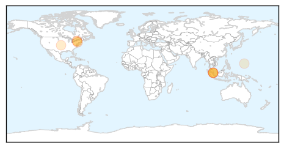

30 Day Trends
Web: 4 alerts, 3 warnings
Twitter: 0 alerts, 0 warnings
Top Articles:
- 0.987
- The Daily Orange – The Independent Student Newspaper of Syracuse, New York
- 0.977
- SGH hep C outbreak: SGH's delay raises questions on info flow, Health News & Top Stories
- 0.910
- Republicans Just Can't Figure Out Vaccines
- 0.855
- More than half of SGH patients 'exposed to hepatitis C' test negative, no new cases, Singapore News & Top Stories
- 0.786
- SingHealth chief tells staff to 'keep strong', stresses mission of care, Healthcare in singapore news, Health News, AsiaOne YourHealth
- 0.610
- Pfizer Receives Complete Response Letter from FDA for Oral XELJANZ® (tofacitinib citrate) Supplemental New Drug Application for Moderate to Severe Chronic Plaque Psoriasis
- 0.502
- W.H.O. tackles hepatitis
Top Tweets:
-
No tweets found for Oct 14, 2015
Web/News Articles

Tweets

Article Locations
Article Confidences